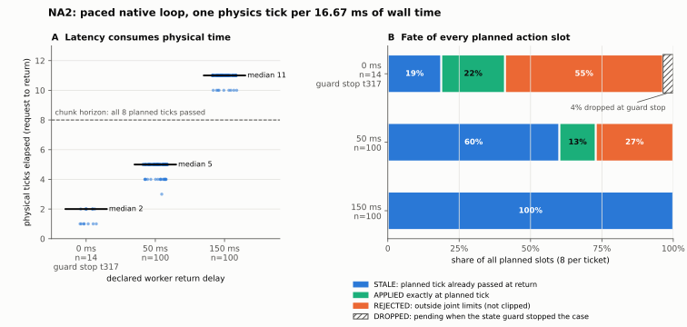

写时复制，语义不变
只复制本条事件实际要修改的容器，其余与上一个状态共享，且从不原地修改。回放同一份 NA1 日志：v0.2 用 218.7 s，v0.4 用 1.5 s；观察事件约 0.1–0.2 ms，不再随历史增长。
差分测试中，用独立审查者的随机操作生成器（含畸形输入）同时驱动 v0.3 和 v0.4：158,839 个操作，每一步的输出码、日志字节和状态都相同。
01 / WHY NA1 WAS SLOW
NA1 的主循环每个 tick 中位 169 ms，而物理步进只要 4.4 ms。拆开计时后发现：不渲染的普通 tick 开销也从 34 ms 线性涨到 243 ms。原因是日志组件每写一条事件，都把整个已接受状态深拷贝一遍。
只复制本条事件实际要修改的容器，其余与上一个状态共享，且从不原地修改。回放同一份 NA1 日志：v0.2 用 218.7 s，v0.4 用 1.5 s；观察事件约 0.1–0.2 ms，不再随历史增长。
差分测试中，用独立审查者的随机操作生成器（含畸形输入）同时驱动 v0.3 和 v0.4：158,839 个操作，每一步的输出码、日志字节和状态都相同。
41 项移植测试、9 项 v0.3 回归测试、16 项字节预留测试，以及 2 项新增测试：旧状态从不被修改；开销不随历史增长。
用审查者原脚本复跑：交叉检查全部一致；对抗与 fuzz 共 48.3 万个操作，异常 0。
仍随历史增长的只有推理开始事件（对至多 512 个输入包算摘要），有窗口上限；每条事件仍单独 fsync（约 2 ms），持久化语义没有改。
02 / RESULT
每 24 tick 发一次请求，每个动作块计划在请求后的第 1 到第 8 个 tick 执行。worker 算完后按声明时长等待再返回。返回时，计划 tick 已过的槽位记为 STALE，不改时间、不补发。

| 声明延迟 | ticket | 经过的 tick（次数） | 作废槽位 | 按时生效 | 超限拒绝 | 节奏：延迟 ≤ 1 周期的 tick |
|---|---|---|---|---|---|---|
| 0 ms | 14（第 317 tick 守卫停止） | 1：7 · 2：7 | 21 / 112 | 25 | 62（另 4 条停止时丢弃） | 95.6% |
| 50 ms | 100 | 3：1 · 4：17 · 5：82 | 481 / 800 | 102 | 217 | 96.3% |
| 150 ms | 100 | 10：9 · 11：91 | 800 / 800 | 0 | 0 | 99.6% |
worker 计算中位约 5.5 ms。经过的 tick 数约等于 ⌈(计算 + 延迟 + 通信) / 16.667 ms⌉，再加至多 1 个 tick 的轮询粒度。三档都落在执行前声明的预测范围内。
每个 ticket 的作废槽数都恰好等于 min(8, 经过的 tick)，reader 逐个核对。这条是机制本身决定的；新的信息是延迟与经过 tick 数之间的实测关系。
这里 16.67 ms 墙钟只对应 4.17 ms 物理时间。若按真实时间运行，150 ms 延迟约吃掉 36 个 tick，50 ms 约 12 个，而 8 槽动作块只覆盖约 33 ms 物理时间。
03 / NATIVE CAMERA
04 / VERIFICATION AND LIMITS
在 NA1 的检查之外，新增以下几项：没有任何物理步早于它的墙钟时隙；渲染只在请求 tick 且没有推理在途时发生；worker 实际等待不短于声明延迟；作废槽数逐个满足恒等式。
推理在途期间，每个经过的 tick 实际占用的墙钟中位为 12.0 / 14.8 / 15.8 ms；在途期间出现超过一个周期滞后的 ticket 分别为 0 / 1 / 0 个。
预算：3 个正式案例各启动 1 次，按 0 → 50 → 150 ms 的固定顺序运行，退出码都是 0，运行后源码冻结不变。执行前另做过 4 次 CPU 预演，不计入原生次数。
0 ms 案例在第 316 tick 生效了一个大幅跳变的 P0 目标：关节 3 一步跳 1.96 rad，两个手指目标不对称。第 317 tick 的状态越过守卫，案例按协议停止，只得到 14 个 ticket。按预算不重跑。
触发守卫的那个状态只在日志里保存了摘要，具体是哪个关节、什么数值越界，无法确定。下一版要把守卫触发时的 q/qd 写入记录。
P0 在已提交的目标中约 68% 超限。本轮不涉及：任务完成、受力、化学终点、S/F/R、M/B3、真机，以及 E02 要求的强计时器基线。
05 / SCIENTIFIC FRONTIER
在原生仿真里实测了“推理延迟 → 物理时间流逝 → 计划动作作废”这条链，并给出三档延迟下的定量关系和节奏保真度。
补上守卫触发状态的记录 → 延迟感知的强计时器基线（E02）→ 独立物理终点 → 合格 S/F/R 数据。
M/B3 仍然 UNTESTED。本轮没有测试任何利用延迟信息的方法，也不包含策略优势或真机化学结果。
06 / SOURCE-BOUND ARTIFACTS